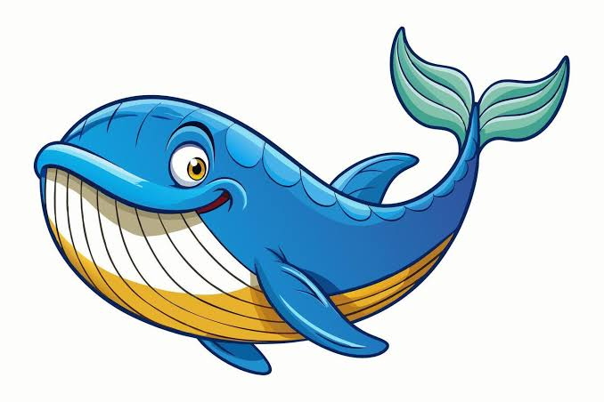
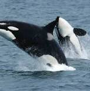
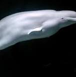
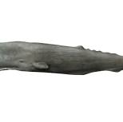
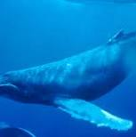
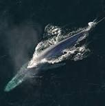

GAME DEV 2026 · HTML FUNDAMENTALS
t1a02 — Lists by Innes
This page demonstrates unordered lists and nested lists by organizing whale species into two groups.
Whales

Learn more from Whales.org's species guide.
Whale species list
- Toothed whales

Killer whale
A highly social toothed whale
Beluga whale
Known for its pale colour
Sperm whale
A deep-diving toothed whale
- Baleen whales

Humpback whale
Famous for its songs
Blue whale
The largest animal known to have lived